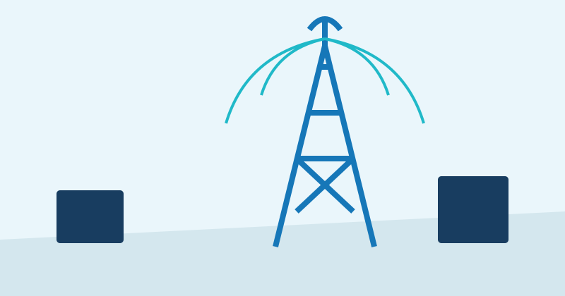

Kabul
Telecom Site Support
Example of site infrastructure coordination, equipment support and power continuity activities.
Illustrative examples of the types of work and service areas relevant to Vital Byte's telecom activities.
The cards below are sample project categories for this student website, not a verified list of completed contracts.

Example of site infrastructure coordination, equipment support and power continuity activities.

Example of internet access support and network connectivity for local customers and organizations.

Example of power-system assistance and technical support for telecommunications infrastructure.
Understand location, coverage, equipment and power requirements.
Prepare a practical service plan, resources and work schedule.
Coordinate installation, configuration or service delivery activities.
Provide follow-up and technical assistance where required.